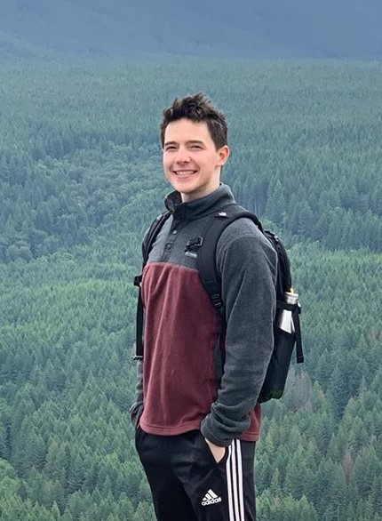

Igor Banin
Student, Engineer, Teacher
University of Washington, Seattle
Hey!
My name is Igor Banin and I am a student studying Applied Physics at the University of Washington,
graduating in June 2020. I am interested in computer science education, electronics, data analysis,
and how we can use technology for the better good.
I am currently working as a programming and robotics instructor at STEP Computer Academy; where I
teach classes of up to 12 students to program in Python and Basic Objective C for Arduino. I design
curriculums and run projects: like how to program a camera sensor using Python on Raspberry Pi or
designing an 8x8 LED matrix snake game controlled by an Analog Joystick. I love to build, program,
and design: this past summer I built a laser drawing time display, controlled through xy servo motors,
and programmed through vector graphics. In school, I worked in a team to analyze health data API through
GHDx to draw conclusions on mortality rates. Through partner projects, I implemented TF-IDF and PageRank
for a search engine, a maze generator through Kruskal’s MST, as well as a maze solver using Dijkstra’s.
At DubHacks 2017 I programmed the distribution of a link shortening service called Link Lives, using a reddit bot
through PRAW.
More about me! I am bilingual, I can speak both English and Russian. I am a frequent gym goer, and I enjoy
lifting. I love playing practically every sport, but I primarily play pickup basketball and
ultimate frisbee with friends. I love to travel: this summer I am going to Germany, Switzerland, Amsterdam,
London, and New York. I am an avid photographer and I love to experience new things, whether that be meeting
new people, trying new food, or seeing new places. I love to hike and program. I am currently working on
familiarizing myself with Python’s Tensor Flow library to dive deeper into the world of
Artificial Intelligence and Machine Learning.